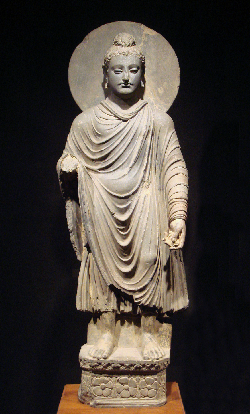

仏教の世界観（１．基本）です。
仏教に詳しい父親の話を参考にしています。
自分の書いた「エリカの技術・芸術日記」2021/08/15より。
仏教の教えの基本は、まず、三法印。すべては移り変わり、何も永遠に残るものはない（諸行無常）。すべてのものに、自分であると言えるものはない（諸法無我）。すべてのものは苦しみである（一切皆苦）。
人々は、悩みや迷いやいらだちを感じることがある（煩悩）。煩悩や苦しみの原因は、知識を知らないこと（無明）。苦しみをなくすために、四諦と呼ばれる正しい考え方がある。苦とは何か（苦諦）、苦の生じる原因は何か（集諦）、苦を滅するとはどういうことか（滅諦）、苦を滅する方法は何か（道諦）。
そして、生きることにおける正しい道は八正道と呼ばれる。正見・正思惟・正語・正業・正命・正精進・正念・正定。これを信じて行うことで、苦を滅し、煩悩を抑えられる。
仏教では、生物を生まれ変わるものと考える。これを輪廻転生とし、六道に輪廻する。一番低いのは地獄で、次が餓鬼、畜生、修羅、人間、天界となる。いいことをしたなどの理由でカルマ（業）が高まると高いものへと生まれ変わる。
また、聖なる存在を四聖とする。すなわち、よい知見を持った声聞、一芸に秀でた縁覚、仏へと至る善良な正しい道を歩む菩薩、そして仏である。
仏教では、悟りを得たものを覚者と呼び、根を張って安定した地盤を得られることを涅槃と呼ぶ。カルマがもっとも高いレベルになって死んだ時、もはや輪廻する必要がなくなった境地を解脱と呼ぶ。解脱は「絶対に裏切らない、絶対に素晴らしい境地」である。
また、仏教では、宇宙において起きることを偶然であるとは考えない。すべてが自らの行為の善悪や真偽によって「縁起」として必然的に起きると考える。転じて「因果応報」とも言う。
仏教では、過度の快楽も過度の苦しみも、どちらも避けるべきであると教える。これを「中道」と呼ぶ。転じて、過激な思想家になるべきではないなどといった意味にもとられる言葉である。
僕の書いたFacebookより。父親の話を参考にしています。
仏教では、私達の生きているこの宇宙以外にも、たくさんの宇宙があり、そのどれにも仏という最高の存在が居るとする。
四千年前に、この宇宙が存在する前からあった、この宇宙の教えを悟ったのが、釈迦如来である。如来とは仏という意味である。
釈迦は創造主ではなく、この宇宙の真理を悟り、それを人々に教える教主である。釈迦は、この宇宙の真理を、小学校、中学校、高校のように、みなに順番に教えた。とてもたくさんのことを教えたため、たくさんの経典にそれぞれ名前がついた。
この世界は常に移り変わり、同じままで留まるものは一つもない。だが、移り変わるということ自体は変わらない。常に移り変わる、ということが、常であり、あらゆるものが常であることはない。これを諸行無常とする。
ものは、あるでもなく、ないでもない。ものは、あるわけでもなく、ないわけでもない。これを空とする。
人間には、生老病死の苦しみがある。これが人生である。これを四苦とする。
人間は、生きている間にした悪行の全てを背負って、生まれ変わる。このカルマは、自分のした全ての善と悪の業を刻み込む。だから、生きている間に善根を生まなければならない。
釈迦すなわちブッダは、たくさんの教えをさまざまな経典に残したため、一部の教えを取り出してさまざま宗派が生まれた。
東南アジアに伝わった小乗仏教は、僧侶になった一部のものしか悟りにあやかることができない。そのため、小さな乗り物とする小乗仏教と呼ばれる。
これに対して日本などに伝わった大乗仏教では、誰でも簡単に仏の力にあやかれる。
真言宗では、大日如来を信仰しているが、悟りを得るためには出家して修行をしなければならない。
それに対して、阿弥陀如来を信仰する浄土宗では、阿弥陀仏に全てを委ねて、阿弥陀経の念仏を唱えれば、死んだ時に極楽浄土に往生できるとする。どんな人でも、悪人でも極楽浄土に行ける。
この分かりやすい簡単な教えは、鎌倉時代の飢餓や飢饉で、末法の世と呼ばれる苦しい社会の中で、人々の救いを求めて爆発的に広まり、今でも日本人は浄土宗やその流れをくむ浄土真宗を信仰している人が多い。
また、禅宗では、釈迦の言葉自体には意味がないとし、座禅を組んで瞑想し、雑念を廃すれば、波立つ水面が綺麗になり、悟りを写し取れると考えている。禅宗は武士道と結びついた。
仏教には、哲学的な側面があり、四諦や八正道など、自ら考え悟るための哲学を教えている。
四諦とは、苦とは何か、苦の原因とは何か、苦を滅するとは何か、苦を滅する方法とは何か、というブッダによる悟りの教えである。また、八正道とは、八つの正しい生き方と方法であり、これらによって人々は解脱し、仏となる。
仏教では、人間は「六道」に輪廻転生すると考える。
その六道とは、地獄、餓鬼、畜生、修羅、人間、天、である。
人間はその時のカルマに応じて、この6つの世界を輪廻転生する。
また、賢い人間のことを、仏教では「四聖」と言う。
その四聖とは、声聞、縁覚、菩薩、仏である。
声聞は、さまざまな人の声を聞き、学問に精通した学者である。
縁覚は、一つのことに秀でた芸術家やスポーツ選手である。
菩薩は、人々の手助けをし、見返りを求めない無償の善と助け合いの活動に生きた、聖職者や修道士である。
そして、菩薩道を歩むことで人は仏になる。仏は、悟った（覚った）人間であり、それを「覚者」と言う。
六道と四聖を合わせて「十界」と言う。
人間は仏になる。そして、最終的には、カルマと輪廻転生の連環から外れること、すなわち「解脱」のために生きている。
解脱とは「絶対に裏切らない境地」であり、何事においても良い状態のことである。
仏教には神が居ません。仏教では「天の神を盲信しなくても、八正道の教えのもとに生きて、無明を克服することで煩悩から救われる」と説きます。
神が居ないので、日本神話（神道）やヒンドゥー教の多神教の神々とも矛盾せず、「神と仏を同時に信じる」ことができます。一神教の神の教えを守る必要はありません。
その代わり、偶像崇拝は禁じられません。なので、仏教芸術として仏像や大仏を作ってもお咎めなしです。
宗教や神話も参照のこと。仏教における四聖では、声聞と縁覚を特別秀でた人間とします。
声聞は、仏の言っていることを聞くことで、仏の教えから部分的に悟りを啓いた修行僧のことです。
これに対して縁覚は、仏の教えを聞くことなく、独自に自分の力で悟りを啓いた人のことを言います。
そして、かつての僕は、まさにそのような「縁覚」の代表格とも言えるような人間でした。
また、その二つの上にある存在として、仏教では「菩薩」を位置づけます。菩薩は、世界に対してよいことしか行わない人のことです。世界のことを愛し、本当の「仏様」のように、人々を平和にし、手助けをしてくれる人のことです。
そのような菩薩の道のことを、仏教では「菩薩道」と呼びます。
そして、菩薩道の先に仏があります。仏教では、このように、声聞、縁覚、菩薩、仏のことを「四聖」と呼び、特に高い存在であるとします。
かつての僕は縁覚でした。縁覚のように、自分の経験だけですべてを悟りました。
それに比べて、今の僕は、そのような縁覚に必要とされる、すべてのものが欠けています。知性も、経験も、考え方も、すべて忘れてしまいました。
ですが、僕は菩薩になることができます。間違ったことをせず、良いこと、正しいこと、善良なことだけをすればいいのです。今の僕にはそれしかできません。そう、僕はもはや、もう一度声聞や縁覚になることはできません。永遠に菩薩を生き、菩薩道の先にある仏になることしか、今の僕にできることはないのです。
2023.09.01
仏教には、人間の人生は六道を輪廻すると教えます。
この六道はインドの宗教の教えであり、地獄、餓鬼、畜生、修羅、人間、天界のことです。
ですが、はっきり言って、人間の人生は単にこの六道を輪廻するだけです。
いつまで経っても、人間の人生は何も変わりません。六道を輪廻して、最悪の状況をぐるぐると永遠に回り続けるだけです。
このような六道の輪廻から解き放たれるためには、「解脱」をしなければいけません。
仏教では、解脱とは「生まれ変わりの輪廻転生から外れること」です。一見、生まれ変わりが終わって、輪廻転生から外れてしまうと、そこですべてが終わりになって、バッドエンドになるように見えますが、仏教ではそれがハッピーエンドです。
いつまでも、つまらない六道を輪廻し続けるぐらいなら、そのつまらない六道から外れたほうが賢いのです。これが「解脱」とされる境地です。
2023.09.01
三法印は、諸行無常、一切皆苦、諸法無我のこと。
諸行無常とは、「いっさいが移り変わって、とどまることがない」ということ。この宇宙の全ては、常に変わらないものはなく、どんなものであろうと移り変わって消えていく。
この諸行無常の教えは、転じて盛者必衰、すなわちどんなに強く栄華を極めたものであっても、必ず衰えて滅亡していく、という教えに繋がる。
一切皆苦とは、「すべては苦しみである」ということ。
苦については、生老病死の四苦のほか、憎む者に会うこと、愛する者と別れる、欲するものが得られないこと、五蘊が思うがままにならないことなど合わせて八苦と言う。
諸法無我とは、「すべてのものにわたしと言えるものはない」ということ。
「我」とされているものは思い込みであり、この宇宙において本当にこれが我であると言えるものは存在しない。デカルトのような「われ思う、ゆえにわれあり」という考え方とは正反対の真理である。
輪廻転生とは生まれ変わりのことで、死んだ人間は新しく別の生物として生まれ変わる。
輪廻については「六道に輪廻する」と言われる。六道とは、地獄、餓鬼、畜生、修羅、人間、そして天界すなわち神。
これに四聖を加えて十界とする。四聖とは四つの正しい人生のことで、声聞（人の言葉をよく聞き、よく知り学んだもの）、縁覚（才能に秀でたもの）、菩薩（仏への道である菩薩道を生きる、修道士のような善の道に生き、他人を手助けするもの）、そして仏である。
輪廻転生する際に、業（カルマ）と呼ばれる自らの成熟レベルによって、優れたものは高いものへ、劣ったものは低いものへと生まれ変わる。
輪廻転生を終えて、もう何にも生まれ変わらなくなったことを「解脱」という。解脱は一見悪いことに見えるが、実際は「解脱ほどいいものはない」。解脱とは悟りを得た境地であり、「絶対に素晴らしい、絶対に裏切らない境地」のことを言う。
宇宙にはじまりと終わりがあるとするキリスト教やセム系宗教の直線的な宇宙観とは逆に、仏教では「宇宙にははじまりも終わりもない」（無始無終）とする。
ブッダは真理を悟り、解脱した「覚者」である。覚者とは悟りを開いた人間のことで、宇宙における法（ダルマ、真理のこと）を悟るに至った「仏」である。ブッダを仏であるとする説明が多いが、実際は仏になることは誰でもできる。仏になることを「成仏」と言う。これは決して「死」を意味するわけではない。自らが、生物や人間であるままに仏になることが、誰であってもできる。
般若心経の教えでは、宇宙は「空」であると言われる。空とは、「あるでもなく、ないでもないもの」。
そこにあることはあるのだが、確かにあるとは言えず、またないとも言えない。これが宇宙の本質であると般若心経は言う。
縁起とは、人間関係の良い出会いとか、ラッキーであるといった言葉であると知られているが、これは間違っている。
縁起とは「自らのした善や悪などの行為に応じて、それに対する報いとしての現象が起きる」ということを言う。
すなわち、いいことをすればいいことが起き、悪いことをすれば悪いことが起きる。
転じて、自分のしたことが悪ければ、それに応じた報いが起きる、という「因果応報」のような考え方にも繋がる。
中道では、極端な快楽と苦行をどちらも捨てる。
仏教では、過激な正義を主張し、悪を倒すために手段を選ばないようなことを、良いと言わない。
どんなに偏った思想にも染まらず、バランスをもって中道を歩むことを、ブッダは正しいと教えた。
四諦とは、苦を考えて悟りへと至るための「正しい考え方」。
苦とは何か、苦の原因とは何か、苦を滅するとは何か、苦を滅する方法とは何か、ということを自ら考えることで、悟りへと至ることができる。
| 四諦 | 説明 |
|---|---|
| 苦諦 | 全てが苦である |
| 集諦 | 苦の原因 |
| 滅諦 | 苦の原因を無くすこと |
| 道諦 | 苦の原因を無くすための方法 |
八正道は、八つの「正しい生き方・生きる姿勢」のこと。
| 八正道 | 意味 |
|---|---|
| 正見 | 正しい見解を持つこと |
| 正思 | 正しい思惟（深く考えること）を行うこと |
| 正語 | 正しい言葉を使うこと |
| 正業 | 正しい行為を行うこと |
| 正命 | 正しい生活を行うこと |
| 正精進 | 正しい努力を行うこと |
| 正念 | 正しい思念（思いを抱くこと）を持つこと |
| 正定 | 正しい瞑想を行うこと |
これらについて「正しい行い」をすることで、煩悩に打ち勝つことができる。
（「理解しやすい倫理（文英堂, 2008年発行版）」を参考に執筆しました。）
2025.01.25編集
煩悩とは、「いらだちや迷いなどの人間を苦しめる観念」。
仏教では108の煩悩が人間の生きる道を制限していると考える。年越しに除夜の鐘を108回鳴らすのはここから来ている。
煩悩の中でも、むさぼり、怒り、愚かさの三毒を最も多い煩悩とする。
煩悩の原因は、「正しい教えや知識を知らないこと」。これを無明と言う。
また、執着と欲望が苦の原因である。欲望を消すことで、永遠の平安の理想の境地が得られる。この境地を涅槃と言う。
自己は、五蘊の集まりである。それは、
| 五蘊 | 説明 |
|---|---|
| 色 | 物質的肉体 |
| 受 | 外の世界を感じること |
| 想 | 想いを描くこと |
| 行 | ものを具体化して作ること |
| 識 | 対象を識別すること |
と言う、5つの作用の集まりである。
（「理解しやすい倫理（文英堂, 2008年発行版）」を参考に執筆しました。）
仏教については以下の書籍が参考になります。

釈迦立像。
ブッダは、釈迦（しゃか）とも言い、仏教の開祖。
ブッダ個人の名前を指す場合は、サンスクリットでガウタマ・シッダールタ、パーリ語の発音ではゴータマ・シッダッタとされる。
“正しい教えを知らないで百年生きるよりも正しい教えを聞いて一日生きる方がはるかにすぐれている。”
“旅に出て、もしも自分よりすぐれた者か、または自分にひとしい者にであわなかったら、むしろきっぱりと独りで行け。愚かな者を道連れにしてはならぬ。”
“他人の過失を見るなかれ。他人のしたこととしなかったことを見るな。ただ自分のしたこととしなかったことだけを見よ。”
“「わたしは愚かである」と認められる者こそ、賢者である。”
“「その報いが、自分には来ないだろう」と思い、善行を軽く見てはいけない。水一滴の滴りも、つもれば水瓶をあふれさせる。心ある人は、小さな善を積み重ねて、いつのまにか、福徳に満たされているのである。”
“おのれを抑えることと、多くしゃべらずにじっと考えることは、あらゆる束縛を断ち切るはじめである。”―ブッダ
ブッダはインドの菩提樹の下で悟りを啓いたとされているのが、僕はこの現象について、菩提樹とされる大樹が賢かったのだと思う。
なぜなら、僕自身が、そのような賢い「大樹」のような精神をしているからだ。
動物には意識があるが植物には意識がないとするのは人間の思い込みにすぎず、実際は植物にも賢い精神や意識は存在する。そのような菩提樹が、ブッダのために宇宙の真理を教えたのだと思う。
2026.01.18
大乗は「大きな乗り物」と言う意味。全ての生き物（一切衆生）を救うことを意味する大乗の立場。
みんなのための（大乗）、みんなを救うためのブッダの教え、と言う意味。
修行をしている寺の住職だけではなく、一般庶民も悟りの恩恵にあやかることが出来るとされる。
東南アジアに広まった旧来の仏教。東南アジアを参照のこと。
（釈迦 (センチュリーブックス 人と思想 4)を参考に執筆しました。）
生きていた頃のブッダは、本を一冊も書いていない。ブッダが死んだ後も、弟子たちはしばらくの間、口頭で教えを広めていた。
だが、ブッダの死後、直接ブッダから教えを聞いていた弟子たちも死んでいくと、仏教はそれぞれの解釈をめぐって分裂し、上座部と大衆部に分かれる。そして、大衆部からさらに大乗仏教が生まれる。
原始仏教がブッダの死によって終わってから、大乗仏教が生まれるまでの時代の仏教のことを、さまざまな学派に分かれていたという意味で、部派仏教と呼ぶ。
この部派仏教の時代に、ようやく、文字で仏の教えを記述することが行われるようになった。仏教の経典であっても、最古の文献は、部派仏教の時代のものである。
だが、部派仏教は、仏の教えを正しく教えていないとして、本来の教えへと回帰するために、大乗仏教が生まれ、多くの経典が作られた。これに、般若経、法華経、華厳経、阿弥陀経などの有名な仏典が含まれる。
2025.12.20
かつて、「釈迦が死んで1000年経つと、仏の教えが忘れ去られ、この世界は滅びて末法の世になる」と言われたことがあった。
鎌倉時代、日本では公家の王朝から武士中心の鎌倉幕府へと政権が転換し、飢餓や飢饉が起きるなど、日本社会は秩序が崩壊しようとしていた。
これをかつて言われていた「末法の世」と人々は言った。末法の世では、現実に絶望した民が、宗教すなわち仏教へと救いを求め、鎌倉仏教が生まれた。
鎌倉仏教は、主に、浄土宗（法然）、浄土真宗（親鸞）、時宗（一遍）、禅宗（臨済宗・曹洞宗、栄西・道元）、日蓮宗（日蓮）。
特に、浄土宗・浄土真宗は「お経を唱えれば誰でも救われる」と説いた。浄土真宗の教えでは、自らの判断力や能力である「自力」ではなく、仏が導いてくれる「他力」に任せ、阿弥陀如来にすがってお経を唱えることで、極楽浄土に往生できると教えた。
（「理解しやすい倫理（文英堂, 2008年発行版）」を参考に執筆しました。）
絶対他力は、人間は念仏などの自力によって往生出来るのではなく、ただひたすらに阿弥陀の救済力にすがり、自己を委ねるほかない、とする浄土真宗と親鸞の考え方。
僕が体験した、神との一連の対話活動と良く似ている。
後日注記：浄土宗では、「南無阿弥陀仏」という念仏をただ唱えることで、阿弥陀如来に自らのすべてを委ねれば死後に極楽浄土に往生できると説いた。また、浄土真宗では「悪人正機」といって、煩悩の強い悪人こそが阿弥陀如来の救いの対象であると考えた。そのような教えは死と隣り合わせの武士の間で人気があり、また農民など庶民の間にも広まっていった。
2026.01.18編集
日蓮宗は、日本の宗教団体である創価学会などが信じていることで有名だが、法華経というお経を最高の教えとし、仏教のたくさんの教えを詰め込んだ「題目」を唱える。
また、日蓮はほかの宗派をボロクソに批判したことでも有名である。
後日注記：禅宗（臨済宗・曹洞宗）が武士階級に人気だったのに大して、浄土真宗や日蓮宗は農民など庶民に人気だった。特に日蓮自身が漁民の出身だったこともあり、日蓮宗は農民（あるいは関東地方の武士）の間で広まっていった。
2026.01.18編集
「一隅を照らす」とは、比叡山を開いたことで有名な伝教大師・最澄の教え。
比叡山は京都と滋賀の間にある山で、唐へ渡って仏教を学んだ伝教大師・最澄が開いた延暦寺がある。
延暦寺では、鎌倉仏教の多くの僧を輩出し、その中には円仁、円珍、良忍、法然、親鸞、栄西、道元、日蓮など、名だたるメンバーである。これらの師匠の師匠がまさに最澄である。
僕は「この一隅を照らす」、という言葉には、「一隅を照らす人材を作り、自らが光となって人々を照らしなさい」という仏教的な真理としての言葉だけではなく、別の意味の言葉があると思う。「自分の今の現在地点を知り、今の自分の居る場所を照らす」といった意味がどこかにこめられているのではないかと思う。
延暦寺では、一風変わった修行をしている。ブラタモリというテレビ番組でやっていたのを見たことがあるが、お堂の暗闇の中を、念仏を唱えながら常に歩き続ける。これを、90日間、起きて寝るまで常にやる。だが、これを見て、「僕が歩き回りながら神と対話しているのと同じことをやりたい」ということが、僕はすぐに分かった。ドイツだけではなく、日本の最澄もきちんと分かっている。元三大師についても、僕のことを言いたかったのではないかと思う。僕は仏教も否定しない。それどころか、僕の考えたことや考え方が、著しく仏教の教えと類似する。仏教も正しい宗教だと、僕は確信を持って言える。キリスト教ともイスラム教徒も矛盾しないように、最初からそのようにできている。
また、自分はこれでは代々宗教の家庭であるように見えるかもしれませんが、そうでもありません。特に、父親は博物館の学芸員だったことのある理科の専門家であり、言ってしまえば「科学者」です。僕は父親のことが大好きで、幼いころから科学が好きで、Windowsパソコンやミニ四駆を良く触っていました。姉はそうした家庭で育ったこともあってプログラマになりました。僕は父親が大好きです。科学者を責めるつもりはありません。
僕の知っている事実の一つ、それが、仏教は自由な宗教ということです。
仏教では、あなたには誰も関与しません。
あなたの力で、あなたのなすがまま、考えるがままに行動し、思考と経験から、「全てのことが同じである」という真理に基づいてこの世界全てを横断し、精神世界との出会いから、心の振る舞いと学習を知り、自らの心を正常な安らぎへと導き、自ら知った世界だけでこの宇宙の真理を見出す、そういう宗教です。
仏教徒には、教えは必要ありません。教えは、自らの賢さと知識が作り出す「幻影」に過ぎないからです。その幻影と上手く付き合いながら、この世界全てを「自らが創り出すこと」で分かります。
仏教の教えは、精神論にすぎません。本当に必要な教えのようなものは、全て、あなたがあなたの思うままに、自由に作り出します。仏教では、あなたを制限するものはありません。たとえ危険な領域であっても、たとえ世界の破滅を呼んだとしても、それはあなたの自由です。その自由に対する報いに、あなたは応えなければなりません。仏教は自由であると同時に、この世界でもっとも恐ろしい宗教です。そして、本当に正しい宗教は、仏教しか存在しません。イスラム教の体験など、仏教徒から見れば、赤ん坊のよちよち歩きにすぎません。イエス・キリストなど、ブッダの足元にも及ばないでしょう。
仏教について言えるのは、「宗教的要素は多いが、聖なるものを信じ仰ぐ宗教の戒律的な教えでなく、一種の哲学的方法論である」という意見があることです。
キリスト教やイスラム教が「こうしなさい」とか「このように生きなさい」という戒律を定め、「逆らうものには刑罰がある」とか、「宇宙には創造主が居て、慈悲の心があり、信じなければならない」といった「宇宙観の説明」を与えるのに対して、仏教はブッダが「このように私は考えた」ということが言いたいだけの「哲学」に過ぎないというのです。
そして、哲学的な側面を見ると、「あまりに虚無主義的で、生きる情熱がない」という意見もあります。ただ、諦め、希望を手放し、なされるがままに生きるだけの「虚無主義的な思想」であるというのです。
ですが、これらはアジアの宗教である、儒教や道教などにも見て取れます。アジア人は、宗教を信じるのであっても、そこに合理的な「根拠」や「説明」を求めます。その意味で、輪廻転生と正しい生き方や考え方を説いた仏教は、「アジアの宗教」である、と言えると、僕はそこまでの前提に反して、そのように思います。
また、余談ですが、ブッダ本人は哲学が嫌いで、哲学については「これが何であるかという答えが得られないうちは、そのことをやめない」ということが、「哲学は自分を刺し殺す刃であってもその刃が何であるかを問うているうちはその刃を抜き出そうとしない」といったことを言っています（詳しく覚えていないので本当は多少違うことを言っているかもしれない）。
また、仏教の特徴として、「仏教は物理学と同時に信じられる」というのがあります。
仏教の宇宙観というのは、無始無終や三千世界のように、宇宙には始まりも終わりも無く、三千というさまざまな宇宙があると教えます。また、輪廻転生といって宇宙の中で生物が生まれ変わり輪廻し、縁起や因果応報といって「己の行いが己に返ってくる」といいます。
ですが、仏教というのは、きわめて現代の物理学と相性がいいのです。仏教の教えと全く同じことが、相対性理論などでも、似たような考え方が再度発見されているのです。
仏教の言うことは、哲学的で難しいですが、西洋哲学のヒュームなどが現れるずっと前から、同じことを言っています。
仏教は、「最初に生まれた正しい物理学」だったのかもしれません。ブッダは、苦行をしながら思索と瞑想をすることで、この宇宙の全てを悟ったのです。物理学の成果とあまり矛盾しない（矛盾はしても考え方の違いとして同時に信じられる）という点で、仏教はとても良い宗教です。
僕は決して、仏教において高い存在ではありません。
なぜなら、まさに僕は「煩悩の塊」のような人間だからです。
僕の頭上にあるのは、いつも煩悩です。迷い、焦り、苛立ち、怒り、そのようなありとあらゆる「煩悩」のすべてを抱え込んだ状態で僕は生きているのです。
かつて、僕はこの世界を支配するような、最悪の権力者となって、この世界を滅ぼし、最悪の世界にしました。
それが前世だったのか、それとも今の自分なのか、あるいは未来の僕なのか、本当のことは僕は何も分かっていません。
ですが、僕はかつての僕の人生で、確かにこの地球という文明を、たったひとりで滅ぼすほど最悪のことをしました。
だから、今の僕の人生では、そのことと戦わなければいけません。僕は、この世界を滅ぼしたかつての僕の行いを反省して生きなければならないのです。
そのような僕に今あるのは、ただただ「煩悩」だけです。迷い、焦り、苛立ち、怒り、その他もろもろの煩悩と、僕は永久に戦い続けます。
この戦いこそが、僕にとっての「菩薩道」です。僕はこの戦いで、決して優勢に立つこともせず、勝利することもしません。永久に戦い続け、永久に煩悩を振り払い続けるのです。
2023.09.01
2024-07-25に関連する内容があります。
ヒンドゥー教を参照のこと。
日本史（武士の時代）を参照のこと。
インドを参照のこと。
中国史・モンゴル史を参照のこと。
ブッダの創始した宗教です。
Wikipedia
書籍